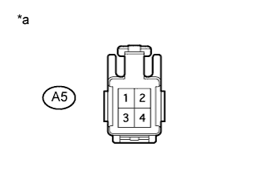
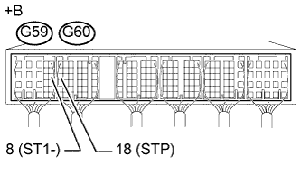

DTC P0504 Корреляция сигналов выключателей тормоза "A"/"B" |
| Сигнал | Педаль тормоза отпущена | Промежуточное состояние | Педаль тормоза нажата |
| STP | OFF (ВЫКЛ) | ON (ВКЛ) | ON (ВКЛ) |
| ST1- | ON (ВКЛ) | ON (ВКЛ) | OFF (ВЫКЛ) |
| № DTC | Условие обнаружения DTC | Неисправный участок |
| P0504 | Условия (a), (b) и (c) сохраняются более 0,5 с (логика диагностирования за 1 поездку): (a) Замок зажигания находится в положении ON (ВКЛ). (b) Педаль тормоза отпущена. (c) Сигнал STP в состоянии OFF (ВЫКЛ), если сигнал ST1- также в состоянии OFF (ВЫКЛ). |
|
| Состояние педали тормоза | Заданные условия |
| Нажата | Состояние ON (ВКЛ) сигнала STP |
| Отпущена | Состояние OFF (ВЫКЛ) сигнала STP |
| 1.ПРОВЕРЬТЕ ВЫКЛЮЧАТЕЛЬ СТОП-СИГНАЛОВ (НАПРЯЖЕНИЕ НА КОНТАКТАХ) |
|  |
Отсоедините разъем выключателя стоп-сигналов.
Измерьте напряжение в соответствии со значениями, приведенными в таблице.
| Контакты для подключения диагностического прибора | Положение переключателя | Заданные условия |
| A5-4 - масса | Зажигание включено | 11 – 14 В |
| *a | Вид спереди разъема со стороны жгута проводов: (к выключателю стоп-сигналов в сборе) |
Подсоедините разъем выключателя стоп-сигналов в сборе.
|
| ||||
| OK | |
| 2.ПРОВЕРЬТЕ ВЫКЛЮЧАТЕЛЬ СТОП-СИГНАЛОВ (НАПРЯЖЕНИЕ НА КОНТАКТАХ) |
Отсоедините разъем выключателя стоп-сигналов.
Измерьте напряжение в соответствии со значениями, приведенными в таблице.
| Контакты для подключения диагностического прибора | Условие | Заданные условия |
| A5-2 - масса | Всегда | 11 - 14 В |
| *a | Вид спереди разъема со стороны жгута проводов: (к выключателю стоп-сигналов в сборе) |
Подсоедините разъем выключателя стоп-сигналов в сборе.
|
| ||||
| OK | |
| 3.ПРОВЕРЬТЕ ВЫКЛЮЧАТЕЛЬ СТОП-СИГНАЛОВ В СБОРЕ |
Проверьте выключатель стоп-сигналов в сборе (Нажмите здесь).
|
| ||||
| OK | |
| 4.ПРОВЕРЬТЕ ECM (STP И ST1 - НАПРЯЖЕНИЕ) |
|  |
Отсоедините разъем ЭБУ.
Установите замок зажигания в положение ON (ВКЛ).
Измерьте напряжение в соответствии со значениями, приведенными в таблице.
| Контакты для подключения диагностического прибора | Состояние педали тормоза | Заданные условия |
| G59-8 (ST1-) - масса | Педаль тормоза отпущена | 7,5-14 В |
| Педаль тормоза нажата | Менее 1,5 В | |
| G60-18 (STP) - масса | Педаль тормоза отпущена | Менее 1,5 В |
| Педаль тормоза нажата | 7,5-14 В |
| *a | Устройство с подсоединенным жгутом проводов (ECM) |
Подсоедините разъем ECM.
|
| ||||
| OK | ||
| ||
| 5.ПРОВЕРЬТЕ ЖГУТ ПРОВОДОВ И РАЗЪЕМ (ВЫКЛЮЧАТЕЛЬ СТОП-СИГНАЛОВ В СБОРЕ – ИНТЕГРИРОВАННОЕ РЕЛЕ [IG2]) |
Отсоедините разъем выключателя стоп-сигналов.
Извлеките интегрированное реле из блока реле моторного отсека.
Отсоедините разъем интегрированного реле.
Измерьте сопротивление в соответствии со значениями, приведенными в таблице ниже.
| Контакты для подключения диагностического прибора | Режим | Заданные условия |
| A5-4 - 1A-5 | Всегда | Менее 1 Ом |
| Контакты для подключения диагностического прибора | Режим | Заданные условия |
| A5-4 или 1A-5 - масса | Всегда | 10 кОм или более |
Подсоедините разъем интегрированного реле.
Установите интегрированное реле на место.
Подсоедините разъем выключателя стоп-сигналов в сборе.
|
| ||||
| OK | ||
| ||